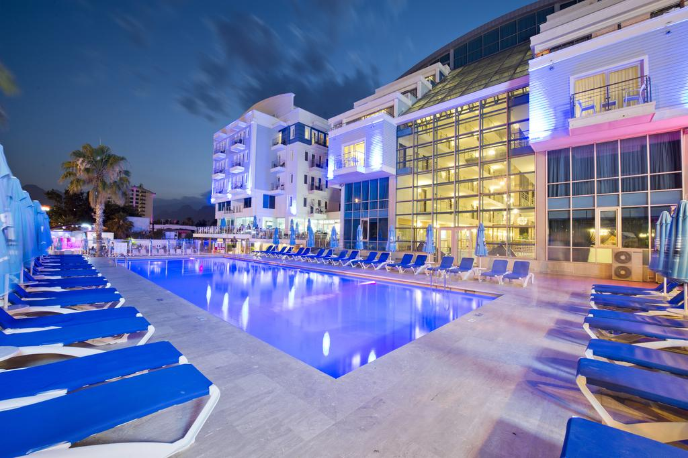

Doğrudan mavi bayraklı Konyaaltı Plajı'na bakan Sealife, tüm aile için olanaklar ve aktiviteler içeren geniş bir tesistir. Otelde kaydıraklı havuzlar, vücut bakımları sunan bir spa, dalış ve şnorkelli yüzme ekipmanları bulunmaktadır.
Sealife Family Resort Hotel'in klimalı odalarının tümü, çoğu Akdeniz manzarasına sahip özel bir balkona açılmaktadır. Her biri yumuşak tonlar ve çağdaş mobilyalarla dekore edilmiştir. Modern cihazlar uydu TV setlerini içermektedir.
Konuklar, Osmanlı ve Balık spesiyaliteleri servis eden farklı restoranlar arasından seçim yapabilirler. Ayrıca bir avuç bar, bir disko kulübü ve bir bistro bar bulunmaktadır.
Bir alt geçit plaja kolay erişim sağlar. Profesyonellerden oluşan bir ekip, çocuk kulübünü özel bir alanda işletmektedir ve otelin arazisinde tenis kortları, sauna ve geleneksel Türk hamamı bulunmaktadır.
Sealife Family, Antalya Eski Kenti'ne 10 km ve Antalya Havaalanı'na arabayla 30 dakika uzaklıktadır. 5M Migros Alışveriş Merkezi ve akvaryum 3 km uzaklıktadır. MarkAntalya Alışveriş Merkezi, Sealife Family Resort Hotel'e 9 km uzaklıktadır.
Ücretsiz özel otopark mevcuttur ve havaalanı servisi talep edilebilir.
Özellikle uyumlu çiftler arasında popüler: İki kişilik bir gezi için 9.2 puan verildi.
Dilinizi konuşuyoruz!

2 Yüzme havuzu
Havalimanı shuttle'ı
Plaj
Sigarasız odaları
Spa ve iyilik merkezi
Özel plaj alanı
Bar
Oda kahvaltı
Copyright © Gencay Çalışkan